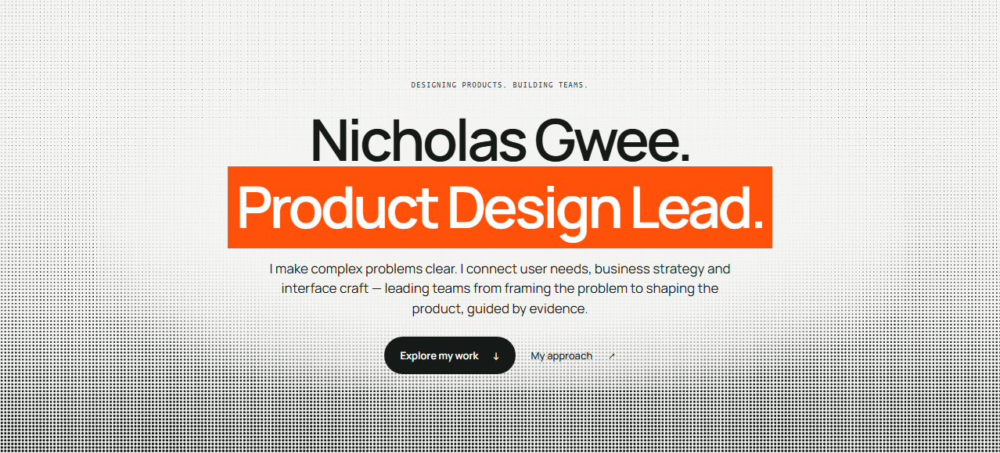
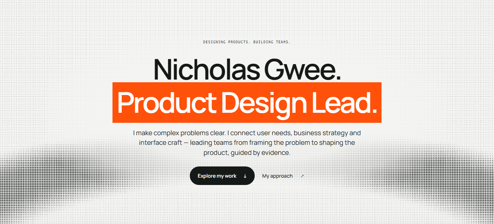

Nicholas Gwee · Background explorations
Less detail.
More room for the introduction.
Three quieter alternatives retain the monochrome halftone and cursor
interaction. The current cloud stays as the default while you compare.
Recommended: Horizon. Its low silhouette gives your
name and role the most breathing room.

Photographic cloud detail and many local contrasts.
Mobile capture

A low, gentle wave keeps the texture below the introduction.
Mobile capture ·
Cursor effect

Soft, sculptural forms frame a quieter center.
Mobile capture ·
Cursor effect

A broad arc gives the background a more graphic composition.
Mobile capture ·
Cursor effect